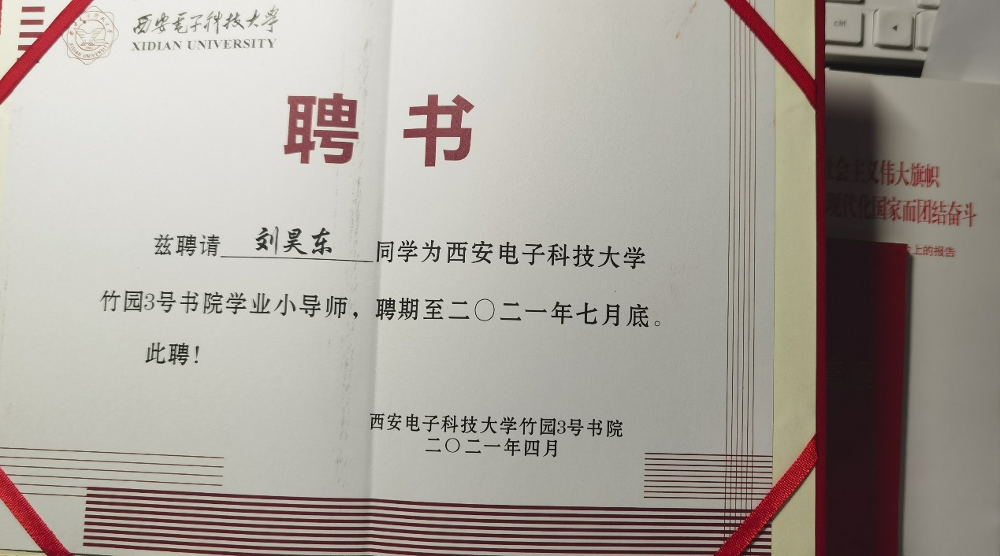
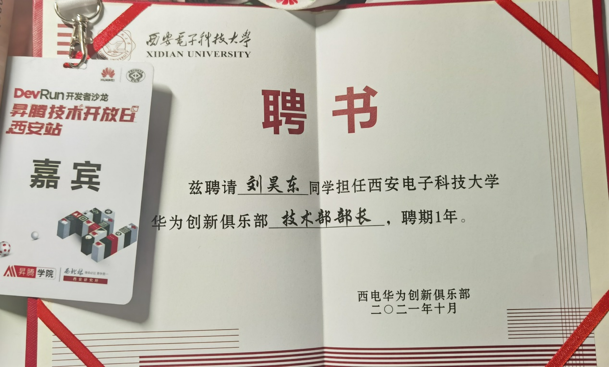

教育背景
2024.09 - 2027.07 (预计)
南京大学 · 硕士
电子科学与工程学院
研究方向：太赫兹技术与器件
- 专业排名：前5%
- 主修课程：高等电磁场理论、微波技术、半导体物理、微纳加工技术
- 研究课题：基于SiN的太赫兹测辐射热计设计与优化
2020.09 - 2024.06
西安电子科技大学 · 学士
光电工程学院
电子科学与技术专业
- 专业排名：22/207 (前10.6%)
- 主要课程：电磁场与电磁波、微波技术、集成电路设计
研究经历
太赫兹测辐射热计研发项目
2024.10 - 至今负责设计和优化基于氮化硅（SiN）薄膜的太赫兹测辐射热计，旨在提高器件的灵敏度和响应速度。
研究内容：
- 设计并仿真基于法布里-珀罗（FP）共振腔的SiN太赫兹探测器结构
- 研究VOx薄膜作为热敏材料在太赫兹波段的响应特性
- 使用CST Microwave Studio进行电磁仿真，优化器件结构和材料参数
- 探索亚微米级SiN悬臂梁结构的加工工艺
研究成果：
- 在320 GHz频率下实现1009 V/W的电压响应率
- 在270-360 GHz频段内获得优异的噪声等效功率（NEP）性能
- 提出了一种新型的VOx/Si复合结构热敏单元
波导耦合光子晶体微腔传感器仿真研究
2023.09 - 2024.06在FDTD-Solutions仿真软件中构建波导耦合光子晶体微腔传感器模型，研究传感器灵敏度与模型参数的关系。
- 在上下悬空的硅基板上构建三角晶格排列的二维光子晶体平板结构
- 通过抽去一排空气孔形成线缺陷波导，并对其中N个空气孔做dy位移构成微腔
- 设计方形Si波导将光耦入和耦出光子晶体波导，监视右侧波导出射的透射率
- 自主编写代码构建几何结构、模式光源和场分布监视器
- 绘制透射率随波长变化曲线，分析传感器灵敏度随模型参数的变化关系
- 优化模型参数提高传感器的检测效率和灵敏度
项目经验
SiN太赫兹测辐射热计设计
设计并优化基于SiN悬臂梁结构的太赫兹探测器，实现高灵敏度和快速响应。
太赫兹天线阵列仿真
使用CST设计并仿真用于太赫兹成像系统的天线阵列，优化辐射特性和方向图。
VOx薄膜特性研究
研究氧化钒薄膜的热敏特性及其在太赫兹探测器中的应用潜力。
超材料吸波器设计
设计基于超材料结构的太赫兹吸波器，实现宽频带高效吸收。
技能与工具
仿真软件
CST Microwave Studio
ANSYS HFSS
AutoCAD
ADS (Advanced Design System)
编程与数据处理
MATLAB
Python (数据分析)
OriginPro
LaTeX
实验技能
微纳加工技术
太赫兹测试与表征
SEM/TEM样品制备
射频测量技术
奖项与荣誉
一等奖学金
2021及2022学年，获得一等奖学金（前5%）
大学英语六级 (CET-6)
六级507，具备良好的英语阅读和写作能力
(NECCS)全国大学生英语竞赛
2022年 C组别二等奖
全国大学生数学竞赛
三等奖 证书编号：F20214622
学生工作
行政班文体委员
大一学年
积极组织开展集体活动，带领班级队伍取得院乒乓球赛团体第三名。
书院学业发展中心学业小导师
大二至大三学年
开展课程讲座和期末答疑活动，参与书院公众号学习笔记运营发布，帮助同学提升学业成绩。
华为创新俱乐部副主席
大三至大四学年
带领俱乐部同学前往华为西安研究所参与昇腾创新论坛，深化校企联系，组织技术交流活动。
工作证明

工作证明 - 学业小导师

工作证明 - 华为创新俱乐部
联系方式
与我联系
欢迎通过以下方式联系我。
电话
15995160249
电子邮件
1114665932@qq.com
地址
江苏省南京市南京大学电子科学与工程学院
研究方向
太赫兹技术与器件、微纳加工、电磁仿真
微信联系
扫描二维码添加我的微信，进行更直接的交流。
通常在24小时内回复学术相关咨询。
微信号: liuhaodong_nju